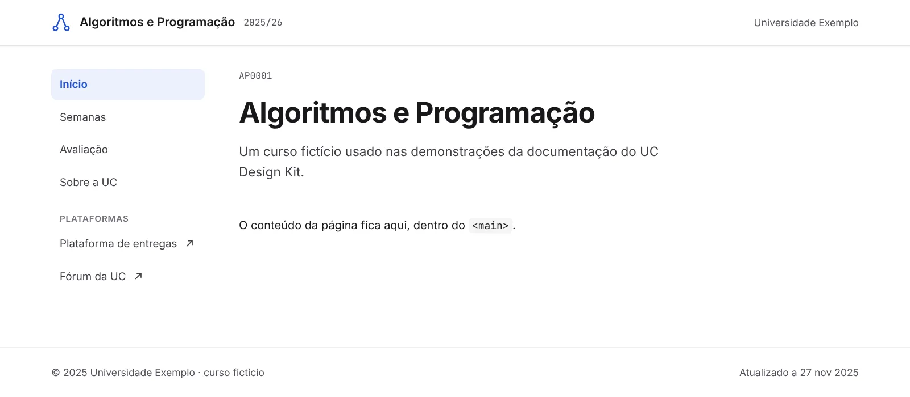

Componentes · Estrutura
<uc-page>
O corpo de cada página do site. À volta do conteúdo escrito pelo professor, desenha o cabeçalho com o nome do curso, a navegação entre páginas, as plataformas externas e o rodapé, tudo a partir do course.js.
Lê o course.js
<uc-page>
<uc-hero></uc-hero>
<p>O conteúdo da página fica aqui, dentro do <code><main></code>.</p>
</uc-page>A demonstração é uma página inteira do curso fictício: cabeçalho com título, edição e instituição, navegação com as quatro páginas e as duas plataformas, o conteúdo e o rodapé com a data de atualização. Nenhum item da navegação está ativo porque o ficheiro da demonstração não está em pages.
A moldura da demonstração é mais estreita do que 960 px, por isso a navegação aparece como no telemóvel: um botão "Menu" que abre a lista. Num ecrã largo, a navegação fica numa coluna à esquerda do conteúdo (aqui com "Início" ativo, como na página inicial):

Utilização
Cada página do site tem um único <uc-page>, logo dentro do <body>, com todo o conteúdo lá dentro. Não se escreve <main>, cabeçalho nem rodapé: o componente gera-os.
<body>
<uc-page>
<h1>Semanas</h1>
<uc-weeks>…</uc-weeks>
</uc-page>
</body>O que aparece à volta vem do course.js. Só title é obrigatório; os outros campos acrescentam partes ao cabeçalho, à navegação e ao rodapé.
window.UC_COURSE = {
title: "Algoritmos e Programação",
edition: "2025/26",
institution: { name: "Universidade Exemplo", url: "https://example.org" },
pages: [
"home", // index.html, "Início"
{ id: "weeks", href: "semanas.html" },
{ id: "assessment", href: "avaliacao.html" },
{ id: "about", href: "sobre.html" },
],
platforms: [
{ label: "Plataforma de entregas", url: "https://example.org/entregas" },
],
footer: "© 2025 Universidade Exemplo",
updated: "2025-11-27",
};A navegação segue a ordem de pages. O item ativo é a página com o mesmo nome de ficheiro que a página aberta (em semanas.html, "Semanas"). A estrutura completa de uma página, com o <head>, está em Estrutura de um site.
Exemplos
Item ativo escolhido
Com current, o item ativo deixa de depender do nome do ficheiro. Serve para páginas que não estão na navegação, como um guião dentro de guioes/: com current="weeks", "Semanas" fica ativo. Abra o menu da demonstração para ver o item marcado; o botão mostra também o nome da página ativa.
<uc-page current="weeks">
<h1>Guião 10: inserir e procurar numa árvore</h1>
<p>Este guião não está na navegação, mas "Semanas" fica ativo porque a página tem <code>current="weeks"</code>.</p>
</uc-page>Sem navegação
layout="full" tira a navegação e deixa o conteúdo ocupar toda a largura, mantendo o cabeçalho e o rodapé. É útil para um site de uma só página, para um enunciado ou para um guião que vai ser projetado na aula.
<uc-page layout="full">
<h1>Enunciado do trabalho 2</h1>
<p>Sem navegação: o conteúdo ocupa toda a largura, entre o cabeçalho e o rodapé.</p>
</uc-page>Mudar de língua
Quando languages tem mais de uma língua, o cabeçalho ganha um botão por cada outra língua ("PT" na demonstração, que abre em inglês com ?lang=en). Os nomes das páginas do kit, o grupo "Platforms", o rodapé e a data passam para a língua ativa, e o conteúdo marcado com lang mostra só a língua ativa.
<uc-page>
<uc-hero></uc-hero>
<p lang="pt">Este parágrafo só aparece em português.</p>
<p lang="en">This paragraph only appears in English.</p>
</uc-page>A demonstração acrescenta ao curso a língua inglesa e o título e a descrição nas duas línguas; o rodapé do curso de demonstração já tinha as duas:
languages: ["pt", "en"],
title: { pt: "Algoritmos e Programação", en: "Algorithms and Programming" },
tagline: { pt: "Um curso fictício…", en: "A fictional course…" },
footer: { pt: "© 2025 … · curso fictício", en: "© 2025 … · fictional course" },A escolha fica guardada no browser e vale para as outras páginas do site. Quando uma página tem um ficheiro por língua (href com um endereço por língua), o botão abre o outro ficheiro em vez de trocar o texto na mesma página. As duas formas estão em Línguas.
Outros anos
Com o campo editions no course.js, o cabeçalho ganha um botão "Outros anos" com a lista das outras edições da cadeira. Numa edição que não é a atual, aparece também um aviso no topo do conteúdo com o link para a edição atual. A lista fica num ficheiro editions.js partilhado, na pasta acima dos anos: acrescentar um ano novo atualiza os sites dos anos anteriores sem lhes mexer.
<uc-page updated="2025-07-15">
<uc-hero></uc-hero>
<p>Página da edição 2024/25: o aviso no topo leva à edição atual e "Outros anos", no cabeçalho, às restantes.</p>
</uc-page>A demonstração simula a edição 2024/25 e usa este ficheiro de edições:
window.UC_EDITIONS = [
{ label: "2025/26", href: "2526/" }, // a primeira é a edição atual
{ label: "2024/25", href: "2425/" },
{ label: "2023/24", href: "https://www.dcc.fc.up.pt/~fds/aulas/EDados/2324/" },
];Como se organiza a pasta e o que muda em cada ano novo está em Novo ano letivo.
Data de atualização de uma página
O rodapé mostra "Atualizado a …" com a data de updated do course.js, igual em todas as páginas. Uma página que muda mais vezes (sumários, problemas) pode mostrar a sua: <uc-page updated="2025-11-20">. Com updated="auto", a data é a da última alteração do ficheiro, que o servidor indica no cabeçalho Last-Modified; se o servidor não a indicar, o rodapé fica sem data, em vez de mostrar a data de hoje. Aberta a partir do disco (file://), a página mostra a data do ficheiro.
Atributos
| Atributo | Tipo | Por omissão | Descrição |
|---|---|---|---|
current | id de página | pelo nome do ficheiro | Item da navegação marcado como ativo, por exemplo current="weeks". Tem de ser um id de pages. |
layout | sidebar ou full | sidebar | Com full, a página não tem navegação e o conteúdo ocupa toda a largura. |
search | off ou noindex | — | Para sites com pesquisa (versão 1.2.0). off: esta página não mostra o botão «Pesquisar». noindex: o uc-site.py deixa a página fora do índice de pesquisa; o botão continua a aparecer. Ver Pesquisa no site. |
updated | data AAAA-MM-DD ou auto | updated do course.js | Data do rodapé só nesta página. auto usa a data do ficheiro que o servidor envia (Last-Modified); sem ela, não mostra data. Ver Data de atualização de uma página. |
Configuração usada
Campos do course.js que o componente lê. Só title é obrigatório; sem pages, a navegação tem apenas "Início".
| Campo | Para quê |
|---|---|
title | Nome do curso no cabeçalho, com link para a página home. |
edition | Ano letivo ao lado do nome, por exemplo "2025/26". |
institution | Departamento ou faculdade à direita do cabeçalho, com link se tiver url. |
logo | Imagem antes do nome; sem ele aparece o ícone do kit e com null não aparece nenhuma. |
accentColor | Cor do item ativo, dos links e do ícone. |
languages | Com mais de uma língua, mostra o botão para mudar de língua. |
pages | Itens da navegação, pela ordem escrita, e página de destino do nome do curso. |
platforms | Links externos no grupo "Plataformas", por baixo das páginas. |
footer | Texto à esquerda do rodapé. Sem ele, o nome do curso e da instituição. |
updated | "Atualizado a …" à direita do rodapé, quando a página não tem o seu updated. |
editions | Ficheiro com as edições da cadeira: botão "Outros anos" e aviso nas edições antigas. |
A referência completa dos campos está em O ficheiro course.js.
Aparecer já pronta
Até o kit construir a página, o <uc-page> fica escondido. Assim a página aparece uma só vez, já com cabeçalho e navegação e na letra final, em vez de mostrar primeiro o conteúdo sem estilo e depois saltar.
- Quando o kit termina, espera pelas fontes Inter e JetBrains Mono no máximo 300 ms e acrescenta a classe
uc-visibleao<html>, que mostra a página. Numa segunda visita as fontes já estão em cache e a espera é praticamente nula. - Se o
uc-kit.jsnão carregar (endereço errado, sem rede), o conteúdo aparece ao fim de 2 segundos, sem cabeçalho nem navegação. - Com o JavaScript desligado no browser, o conteúdo aparece logo.
Uma página que fique em branco durante 2 segundos e depois apareça sem estilo de kit indica que o uc-kit.js não carregou: confirmar os endereços do <head> em Estrutura de um site.
Páginas em subpastas
Os href de pages são relativos ao course.js, não à página. Uma página em guioes/aula10.html, que carrega ../course.js, recebe por isso uma navegação que aponta para ../semanas.html sem escrever nada. O logo, os links escritos no HTML e os do rodapé continuam relativos à página que os mostra. O exemplo completo está em Estrutura de um site.
Ligações para secções
Qualquer título <h2> ou <h3> dentro do <uc-page> pode receber uma ligação, mesmo sem id escrito no HTML: o kit dá-lhe um a partir do texto, antes de desenhar os componentes.
- O
idé o texto do título sem acentos, em minúsculas, com espaços e sinais trocados por-: «Exercício 2» dáexercicio-2, e a ligação ésemanas.html#exercicio-2. Um título só com sinais dásection. - Dois títulos iguais dão
exercicio-2eexercicio-2-2, pela ordem da página. - Um
idescrito no HTML nunca muda e nunca é repetido. Osweek-1,week-2… das semanas também contam como ocupados. Para uma ligação que não pode mudar quando o texto do título muda, escreve-se oidà mão. - Num site com duas línguas usa-se o texto da primeira língua de
languages, por isso a ligação é a mesma em português e em inglês.
Como a página só aparece depois de pronta, o kit volta a deslocar-se até ao título da ligação quando a página aparece e destaca-o durante 2 segundos (classe uc-target-flash: fundo e contorno na cor de destaque, sem transição para quem pede menos movimento).
O script uc-site.py segue a mesma regra, por isso os resultados da pesquisa apontam para a secção certa.
Pesquisa no site
A partir da versão 1.2.0. Com search: true no course.js e o ficheiro search-index.js criado pelo uc-site.py, o cabeçalho mostra o botão Pesquisar antes do botão de língua, com os atalhos Ctrl K, ⌘ K e /.
- O kit pergunta ao servidor se o índice existe uma vez por visita, quando o browser está desocupado. Enquanto espera, guarda o lugar do botão para nada saltar; se o índice não existir, o botão não aparece.
- Sem
searchnocourse.jsnada disto acontece e não há nenhum pedido a mais. - Nos ecrãs estreitos só aparece a lupa, com o mesmo nome acessível.
O botão abre uma janela por cima da página. Só então o browser descarrega a pesquisa (uc-search.js, cerca de 5 KB) e o índice; enquanto chegam, a janela diz «A carregar…», e se falharem mostra «Tentar de novo».
- Os resultados aparecem enquanto se escreve, agrupados por página (por exemplo «Semanas · Guião 9»), com as palavras encontradas destacadas. Os prazos e os avisos do
course.jstambém são pesquisados, sempre atualizados, nos grupos «Prazos» e «Avisos». - As setas escolhem um resultado, Enter abre-o e Esc fecha a janela e devolve o foco ao botão. Um resultado na mesma página abre a semana ou o exercício que o esconde, desloca a página, destaca-o e leva lá o foco.
- O rodapé da janela mostra a data do índice («Índice de 20 nov 2025»). Se o
course.jsfoi atualizado depois, o kit deixa um aviso na consola do browser para quem mantém o site: é altura de correr ouc-site.pyoutra vez.
As regras da pesquisa (acentos, uma letra trocada, ordem dos resultados) estão em <uc-search>, o campo de pesquisa para pôr dentro de uma página.
Personalizar
Estas classes são estáveis na versão 1 e podem ser usadas num theme.css. As regras do kit têm especificidade zero, por isso qualquer regra do professor ganha. O método está em Nível 2: CSS livre; para mudar só cores, cantos ou letra em todo o site bastam os tokens.
| Classe | Elemento |
|---|---|
.uc-page, .uc-page--full | A página (o próprio <uc-page>) e a variante sem navegação. |
.uc-page--nav-open | A página com o menu aberto, em ecrãs estreitos. |
.uc-header, .uc-header__inner | O cabeçalho e a sua faixa centrada. |
.uc-brand, __logo, __title, __edition | O link com o logótipo, o nome do curso e o ano letivo. |
.uc-header__meta, .uc-header__institution | O lado direito do cabeçalho e a instituição. |
.uc-lang-switch, __button | Os botões para mudar de língua. |
.uc-search-button, --pending, __label, __hint | O botão «Pesquisar» (sites com pesquisa), o lugar guardado enquanto o kit pergunta se o índice existe, o texto e o atalho Ctrl K. |
.uc-target-flash | O destaque de 2 segundos no destino de uma ligação #… ao abrir a página. |
.uc-page__editions, .uc-page__editions-button, .uc-page__editions-menu | "Outros anos": o contentor, o botão e a lista de edições. |
.uc-page__edition-notice | O aviso no topo de uma edição antiga (um uc-callout). |
.uc-shell | A grelha com a navegação e o conteúdo. |
.uc-sidebar, .uc-nav | A coluna da navegação e o <nav> dentro dela. |
.uc-nav__list, __link, __group | As listas de links, cada link e o título "Plataformas". |
.uc-nav-toggle | O botão "Menu" dos ecrãs estreitos. |
.uc-main | O <main> com o conteúdo do professor. |
.uc-footer, __text, __updated | O rodapé, o texto à esquerda e a data de atualização. |
.uc-skip-link | O link "Saltar para o conteúdo", visível só com o foco do teclado. |
/* Navegação mais larga e conteúdo um pouco mais estreito. */
:root {
--uc-sidebar-width: 240px;
--uc-content-max: 1100px;
}
/* Cabeçalho com fundo na cor do curso. */
.uc-header { background: var(--uc-color-accent-soft); }A largura da navegação é --uc-sidebar-width (216 px), a da página é --uc-content-max (1200 px) e o espaço entre os blocos do conteúdo é --uc-main-gap (48 px). Abaixo de 960 px de largura, a navegação passa para o botão "Menu".
Acessibilidade
O que o componente faz
Gera os pontos de referência <header>, <nav>, <main> e <footer> e um link "Saltar para o conteúdo" como primeiro elemento focável. O item ativo tem aria-current="page"; os botões "Menu" e "Outros anos" indicam com aria-expanded se estão abertos e fecham com Escape, devolvendo o foco ao botão. As plataformas externas são anunciadas como "(site externo)" e o botão de língua diz para que língua muda.
O que cabe a quem escreve
Um <h1> por página (o <uc-hero> já o tem), títulos seguintes por ordem e um <title> que distinga as páginas. Com logo, uma imagem com contraste suficiente; o texto alternativo fica vazio porque o nome do curso está ao lado.
Sem JavaScript
Com o JavaScript desligado, o conteúdo aparece logo, numa coluna centrada, sem cabeçalho, navegação nem rodapé. Se o JavaScript estiver ligado mas o kit não carregar, o mesmo conteúdo aparece ao fim de 2 segundos. Convém por isso que a página se perceba sem a navegação: um título no início e links para as outras páginas onde fizerem falta.
Ver também
<uc-hero>: o título do curso no início da página inicial.<uc-guide>: um guião de aula, que costuma usarcurrent="weeks".- Estrutura de um site: o
<head>, a lista de páginas e as subpastas. - Línguas: conteúdo bilingue e um ficheiro por língua.
- Uso real: a página inicial de Estruturas de Dados 2025/26 e um guião numa subpasta.